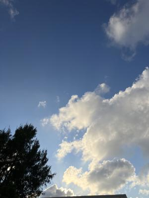
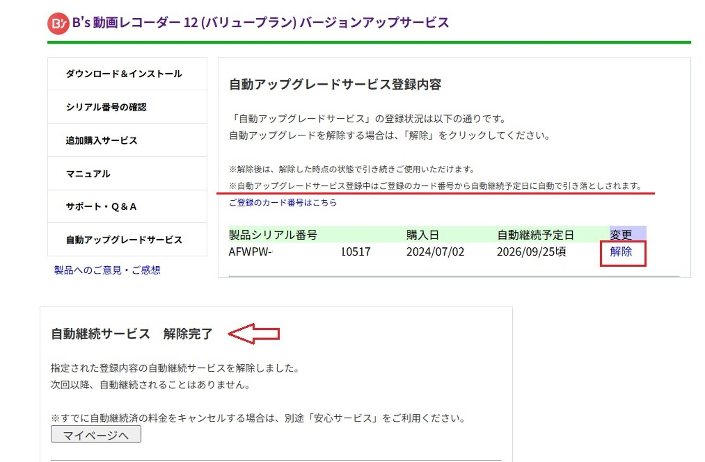

うるがいの話 ある日
最新: 自動課金【うるがいの話 ある日】とは 一日だけのプログです
『うるがいの話』の最新一日だけのプログで、通信料が少なく経済的だ。カニの画像をクリックすると全ての日付が載る『うるがいの話』サイトを表示します
|
|
【うるがいの話】 うるがい(ｳﾙｶﾞｲ urugai)とは、『もずくがに』の名前でとても大きくなります。 |
|---|---|
|
|
【カミマヤーの話】 猫のことを方言でマヤーといいます。カミマヤー（kamimayaa）とは、神の猫のことです。 |
|
【たながぁの音楽】 たながぁ（ﾀﾅｶﾞｰ tanagaa）とは手長えびのことで、何種類かあり大きいのは車 エビぐらいになります。 |

|
【ぶながぁの話】 ぶながぁ(ﾌﾞﾅｶﾞｰ bunagaa)とは、赤い髪の毛、赤い身体、そして身長は１ｍ２０ｃｍ ぐらい、川の蟹を食べているの目撃された。場所は沖縄県国頭郡大宜味村のと ある村僕の隣近所に住んでいる爺さんから、聞いた話です。 |
|
|
【ギーマの話】 ギーマ(giima)とは、山原の里山に咲くスズランに似た、 花を付けます。実は食べられます、 気が付くと口の周りが紫になっています。 |
2025年10月18日 (土）自動課金
15:26

１０月２日、ユーチューブ動画の動画キャプチャを行うためソフ
トの起動を行うと、新バージョンのインストールが行われた。ん
！、なんかおかしいと思いながらも、動画のキャプチャを行うと
画面の取得範囲の指定機能が、無くなっている！！。おおお！と
思ったが、取りあえず動画を作成。その後、クレジットカードか
ら、１，９８０円の利用がありましたとメールが。え！、と思っ
た。（過去のメールを調べると９月３０日に、最新版へのバージ
ョンアップの手続きが完了しました、があった）。
で、この前その会社からアンケートの協力のメールが来た。下は
回答である。
Ｂ’ｓ動画レコーダーを長らく利用しています、最新のＢ’ｓ動
画レコーダー１２はこれまで、画面サイスの範囲指定の機能が無
くなっています！！。
元のバージョンに戻したいです！！！！、それと、自動課金は知
らずに、購入になっているようで驚いています。自動課金は、削
除しました。
口座情報は、引き落とし後、削除します。個人的には詐欺にあっ
た気がしています。
なぜ、この事態になったかと調べてみたら、バージョン１２の前
の無料のバージョン１１（一年前の２０２４年０９月１２日）が
あって、その時に製品の『自動更新』というものになっていた。
早速、『自動更新』を解除する。

口座情報を登録しているので怖いよね、それで登録口座情報を削
除したものの、今回の引き落としが１０月２７日と気づき、また
登録しなおす。この企業って、ＺＥＲＯウィルスセキュリティの
会社ですよ。